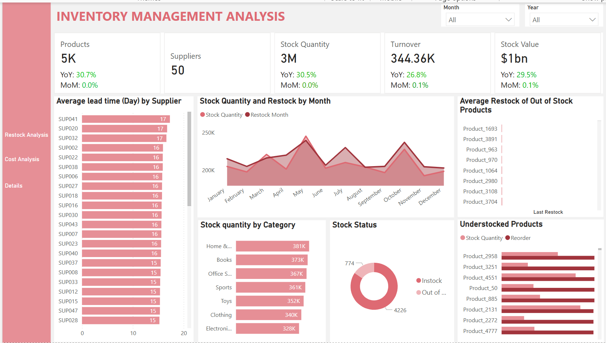
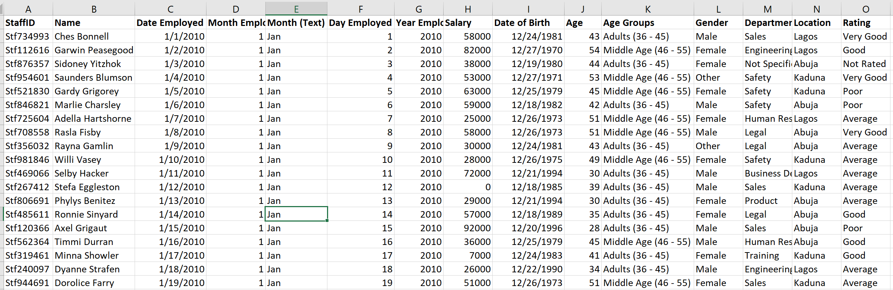

This dashboard analyzes banking data from 2023 through mid-2025 to understand how customers interact with different products and identify which products generate the most revenue.
It also explores broader patterns, including transaction volumes, channel preferences (mobile, branch, ATM, online), and emerging trends over time.


Flight delays are a significant challenge in the aviation industry, affecting airline operations, passenger experience, and overall efficiency. This dataset provides a comprehensive analysis of flight delays, capturing key factors such as departure and arrival times, airline performance,
airport congestion, weather conditions, and air traffic control delays.

Effective inventory management is critical to operational efficiency, cost control, and customer satisfaction in any product-based business.
This report presents a comprehensive analysis of an inventory dataset which simulates the inventory system of a hypothetical multinational company.

Data cleaning is a critical first step in the data analysis process. It involves identifying and correcting errors, inconsistencies, and inaccuracies within a dataset to ensure the quality and reliability of insights drawn from it.

This project explores inventory management data using SQL to answer key business questions, uncovering insights that support data-driven decision-making.